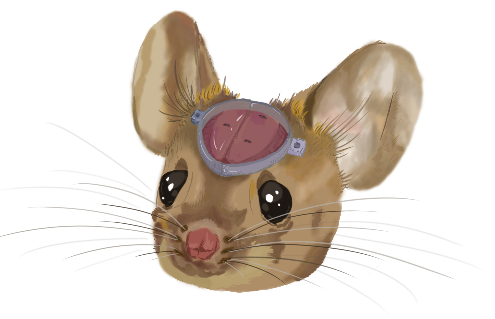
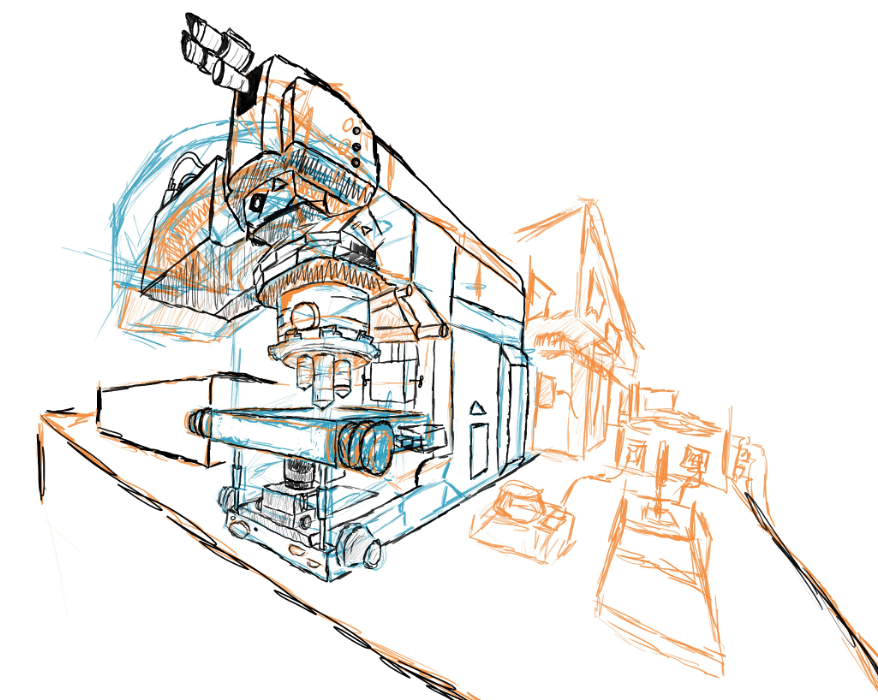
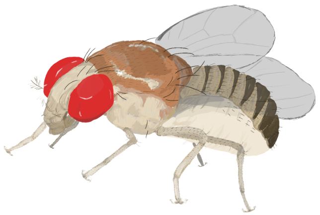

Current Work
ORCiD: (link);
Google Scholar: (link)
I am currently in my early medical school / pre-graduate school years at Stanford. I am doing a mix of
wet lab and computational work with mice and humans. I primarily work with adult and pediatric epilepsy patients,
as well as patients with autism spectrum disorders through the Human Neural Circuitry program at Stanford.
Deisseroth Lab 2025 – present
Department of Bioengineering, Psychiatry
Stanford University
PI: Karl Deisseroth, M.D., Ph.D. (profile)

I started rotating in the
DLab in December of 2024. My rotation projects
included both mouse work (primarily using Neuropixels to record from the brain of mice), and human
work (including human transcriptomics and memory). All of the human work I was able to
be involved in was through the Human Neural Circuitry (HNC) program led by Dr. Deisseroth.
I really enjoyed the rotation, and felt like there were endless things to do in the lab,
so I joined right after in April 2025. My current work focuses on bridging mouse and human studies,
largely in the realm of social interaction and autism spectrum disorders.
Ramayya Lab May – Dec. 2024
Department of Neurosurgery
Stanford School of Medicine
PI: Ashwin Ramayya, M.D., Ph.D. (profile)

In the summer and autumn of 2024, I worked with
Dr. Ashwin Ramayya, doing computational projects
focusing on how the brain anticipates stimuli or, conversely, reacts to unexpected stimuli to encode prediction error.
The RLab had just started then, and I was an attendee of the inaugural lab meeting.
It was great to see the lab grow over those months. I am fortunate enough to continue working with Dr. Ramayya through
DLab collaborations.
Song Lab 2021 – 2024
Center for Cellular and Molecular Therapeutics
Children's Hospital of Philadelphia
PI: Yuanquan Song, Ph.D. (profile)

For most of undergrad at Penn I worked in the
Song Lab advised by Dr. Yuanquan Song. I primarily led
projects focused on axon regeneration after injury, particularly in a
Drosophila model where injury was induced
via 2-photon laser ablation. The topics I focused on the most were how neuronal excitability and the biophysical interactions
between neurons and glia could alter regeneration.
Because of this focus on excitability, I also worked on a computational project with Dr. Yoichiro Mori, M.D., Ph.D. (
profile) attempting to
model the calcium dynamics in the growth cone of a regenerating neuron.
Select Song Lab Publications
Miscellaneous
Here are some professional projects I worked on outside of a lab context.
For example, my friend Anson and I combined some of our interests to write an article on
BCI commercialization.
Please feel free to reach out to me with questions or ideas for collaboration. It would be a pleasure to hear from you.